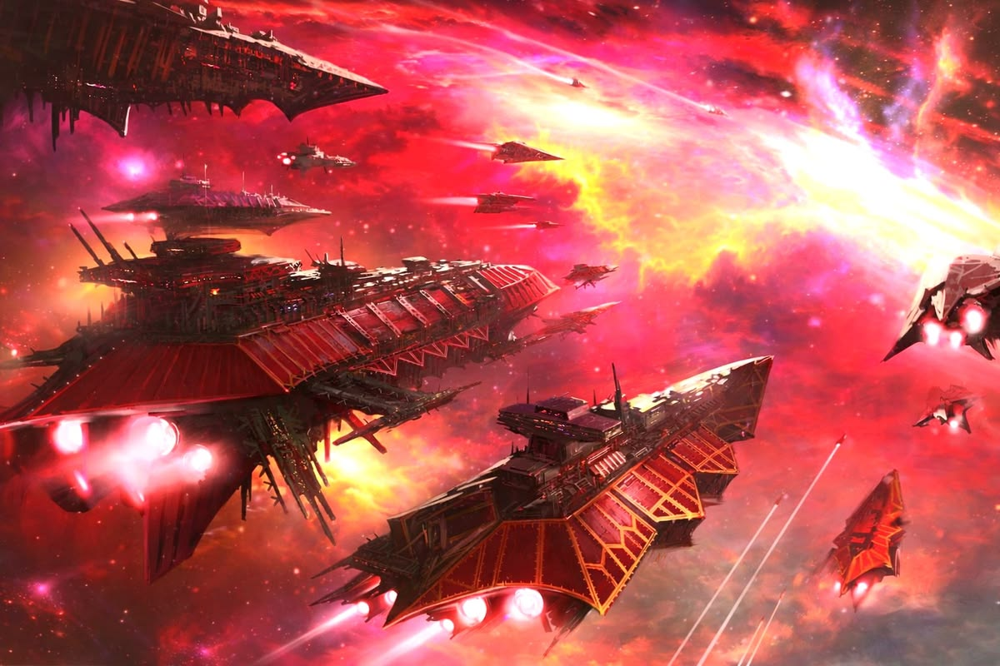
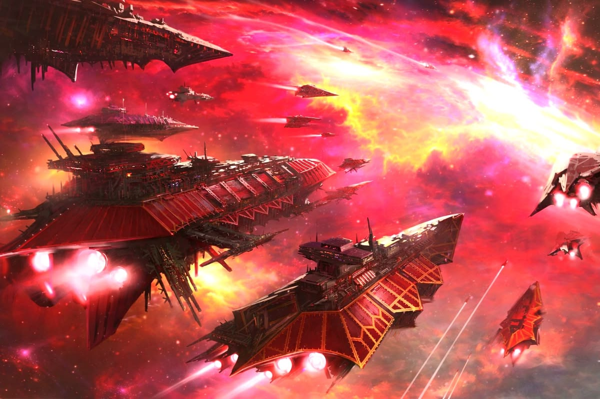

Buon Compleanno, Comandante!
Giorni all'atterraggio
Giorni
Ore
Minuti
Secondi
Propulsori accesi
I propulsori si accesero uno dopo l’altro, incendiando il buio con scie azzurre e oro. L’ammiraglia di Kael guidava la formazione al centro di un mosaico di flotte provenienti da ogni angolo della galassia conosciuta. Non era una semplice battaglia: era un conflitto destinato a decidere l’equilibrio dell’intero trono stellare, come nelle epiche contese di Twilight Imperium, dove antiche casate e imperi emergenti si sfidano per il dominio della capitale galattica.
Le comunicazioni crepitavano di trattati segreti, promesse sussurrate e minacce velate. Ogni fazione muoveva le proprie armate con calcolo meticoloso: dreadnought schierate a protezione dei sistemi chiave, incrociatori lanciati in rapide incursioni per conquistare pianeti strategici, portali attivati per proiettare potenza oltre i confini consueti. Non bastava la forza bruta; occorrevano influenza, diplomazia, capacità di prevedere quale obiettivo avrebbe garantito prestigio e supremazia al termine del ciclo stellare.
Mentre i propulsori ruggivano e lo spazio si increspava sotto la spinta delle flotte, Kael comprese che ogni ordine impartito era parte di una strategia più ampia, un disegno che intrecciava guerra e politica. In quel momento sospeso tra luce e oscurità, la galassia intera trattenne il respiro, consapevole che l’era successiva sarebbe stata forgiata dal fuoco dei motori appena accesi.

 

- Link Amazon: Nebulosa Amazon
- Link Fantasia: Sistema Fantasia
Lettera al Capitano
Capitano,
Le scrivo mentre i tecnici completano l’ultima calibrazione dei propulsori principali. Troppo spesso, nei racconti di gloria, si celebrano le armi, gli scudi o il coraggio degli equipaggi, dimenticando ciò che rende possibile ogni impresa: la spinta che ci strappa all’inerzia e ci consegna alle stelle. Senza propulsori efficienti non esiste esplorazione, non esiste ritirata strategica, non esiste vittoria.
I nostri motori non sono soltanto macchine: sono il cuore pulsante della nave. Ogni salto nell’iperspazio dipende dalla loro stabilità, ogni manovra evasiva dalla loro prontezza. Un ritardo di pochi secondi nell’accensione può significare l’accerchiamento; una variazione minima nella spinta può determinare la differenza tra attraversare indenni un campo di detriti o restarne intrappolati.
Le affido dunque la responsabilità di vegliare su di essi come farebbe con il suo stesso equipaggio. Pretenda controlli doppi, ascolti il suono delle camere di combustione, osservi le vibrazioni del ponte quando la potenza sale. Finché i propulsori risponderanno al nostro comando, avremo sempre una via: per avanzare, per salvare, per sperare.
Che la loro fiamma non vacilli mai.
Nuove Rotte Strategiche
Propulsori MK-II
Rotta di scoperta
Un manuale tecnologico di interazione con nuove razze per la diplomazia planetaria.
Scudi Quantici
Arnesi da apertura
Strumenti tecnologici per la penetrazione di difese avanzate e l’accesso a sistemi protetti.